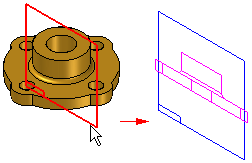

Component Image command
Creates a 2D representation of a 3D component on the active sketch plane. This command is used to create a component sketch, which you can use when placing an existing document into an assembly sketch as a predefined component.

The graphics you create with this command are not individually selectable, they can only be selected as a group using the graphics range box.
For more information on working with virtual components, see the Creating and Publishing Virtual Components Help topic.
Look up more details
Change Component Type CommandComponent Sketch command
Copy Definition Command
Edit Definition Command (Virtual Components)
Replace Command (Virtual Components)
Place Component Copy Command
Position Virtual Component command
Publish Virtual Components command
Scroll To Source Command
Scroll To Virtual Component Command
Select Geometry Command
Update Component Command